봉투 제일호
참살된 소녀의 무덤에
두 청년의 유령
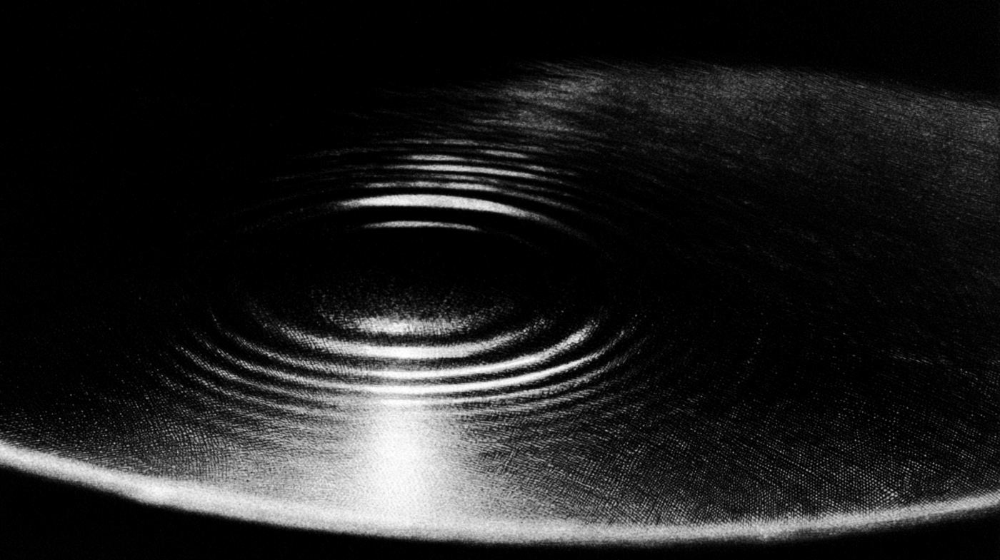
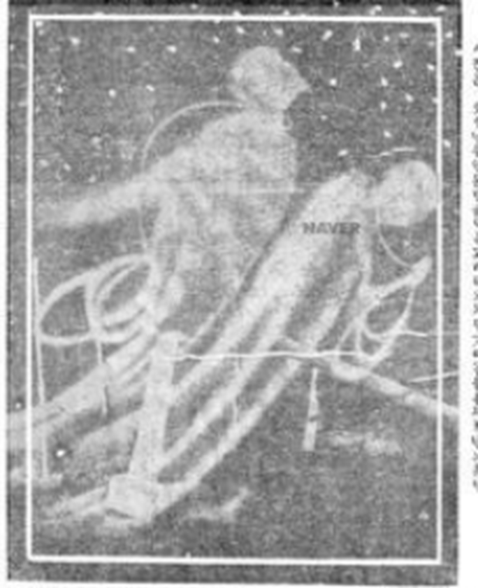
현상 중 — 사진이 떠오를 때까지 기다리시오
본보 게재 사진 · 현상실은 재현소녀를 죽엿다는 혐의를 바다서
참혹한 사형에 애매히 죽은 령혼.
「보통 사람은 말할 것도 업고 학자들까……」
그 무덤 우에 서 잇는 것은 누구인가.
이 사진은 — 도장을 하나 찍으시오
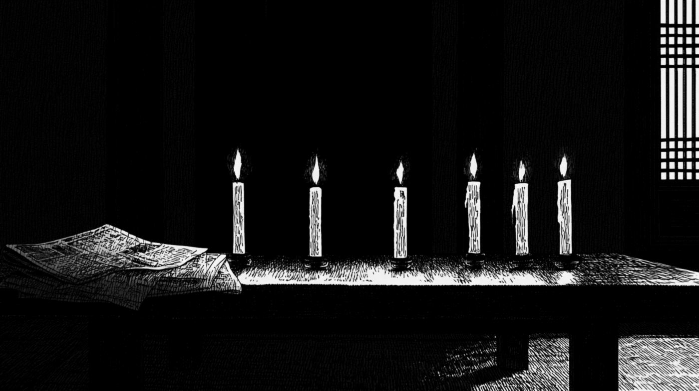
그림 · 재현경성야록 · 납량란
초를 켜 두고 괴담 한 편에 초 하나씩 끄던 밤 노리.
소리를 켜고 보시기를 권하오 · 우의 ♪ 로 언제든 끌 수 잇소
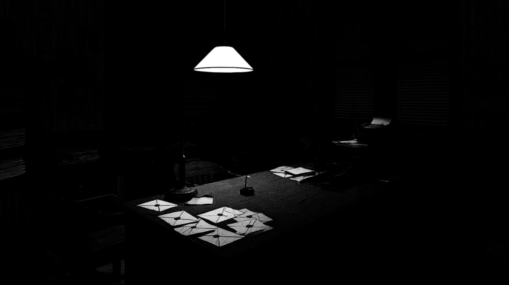
그림 · 재현소화 구 년 녀름, 자정. 편집국
그해 녀름 본보는 「여름의 괴담」 원고를 모핫다.
그 원고는 아즉 차저내지 못하얏다.
대신 책상 우에 봉투 여섯 장.
지면 곳곳에서 오려 낸, 긔이한 긔사들이다.
한 장을 다 닑거든, 초를 하나 끄시오.
하기원고모집 — 동아일보 1934년 7월 17일~8월 8일, 여섯 차례 게재 · 모집 항목 「여름의 괴담과 소화(일천 자 이내)」
봉투 제일호


현상 중 — 사진이 떠오를 때까지 기다리시오
본보 게재 사진 · 현상실은 재현소녀를 죽엿다는 혐의를 바다서
참혹한 사형에 애매히 죽은 령혼.
「보통 사람은 말할 것도 업고 학자들까……」
그 무덤 우에 서 잇는 것은 누구인가.
이 사진은 — 도장을 하나 찍으시오
봉투 제이호
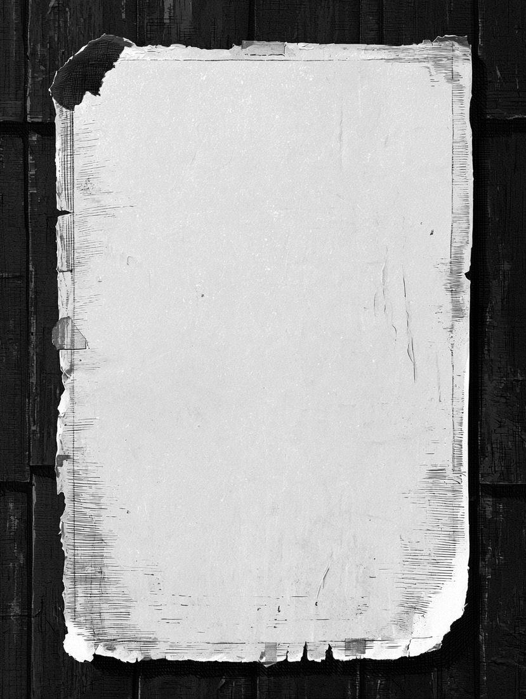
광 고
귀신
파오
집에 붓흔 귀신 떼여 드림
새 귀신도 잇슴 · 밤에만 문의
※ 편집국이 지어낸 벽보
벽보 뒤에 붓흔 것 — 진짜 지면
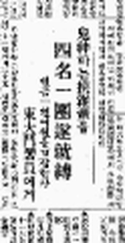
귀신 파는 협잡배들
네 명 한 패, 마침내 붓잡힘
현금 일천여 원을 협잡한 자 — 동대문서원에게
벽보 귀퉁이를 손가락으로 잡아 — 우로 끌어 뜨드시오
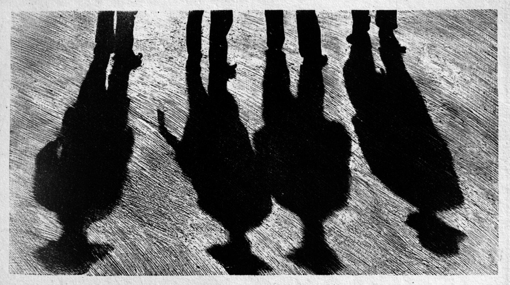
그림 · 재현귀신을 판다는 이들. 한 패는 네 사람.
가로챈 돈은 현금 일천여 원.
결국 나타난 것은 귀신이 아니라
동대문서원이엇다.
봉투 제삼호
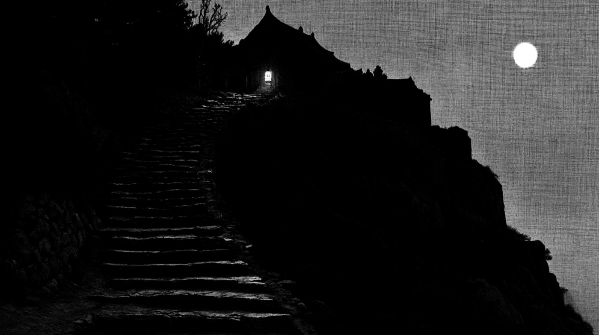
손가락으로 안개를 거드시오
그림 · 재현소화 이 년 겨을, 본보는 「전설의 조선」을 련재하고 잇섯다.
예순여섯재 이약이의 제목은 「괴이한 증봉산」.
안개가 거치자 산 우에 불이 하나.
그러나 이 산의 무엇이 괴이한지는,
아즉 아모도 닑지 못하얏다.
봉투 제사호
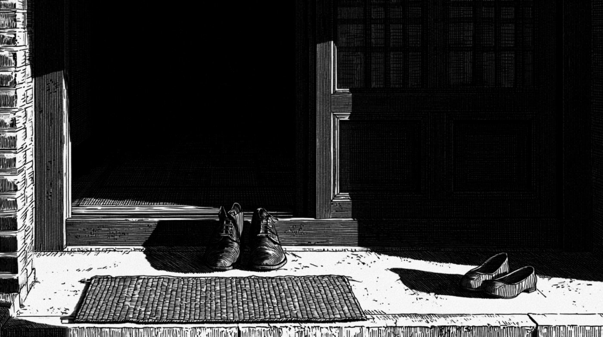
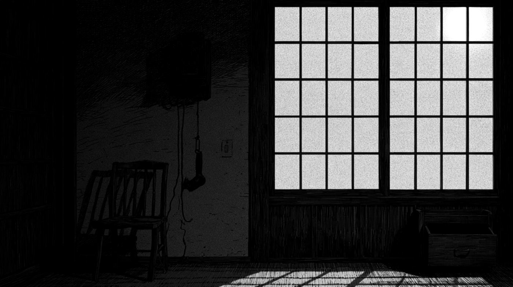
0 / 4
불 꺼진 방이오. 손가락을 대고 움직이면 — 촛불로 방 안을 비추오
그림 · 재현신문은 이 밤을 「환극」이라 불넛다.
그는 누구에게 뎐화를 걸녀 하엿나.
봉투 제오호
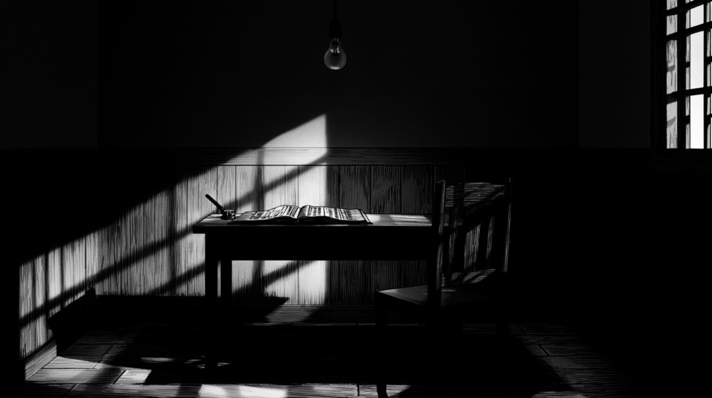
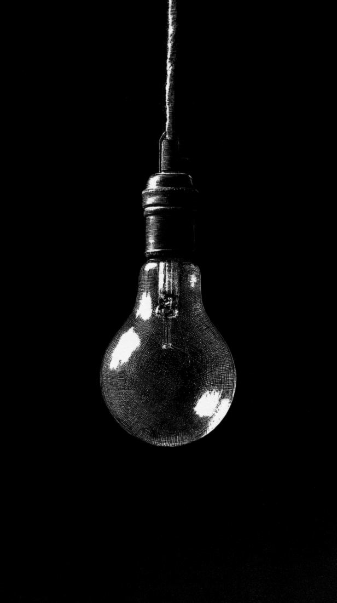
그림 · 재현취조 긔록편집국이 꾸민 장면
혐의자가 의자에 안저 잇소. 무르시오.
긔괴!
살인강도 혐의를 밧던 사람이, 취조를 밧던 중 말을 못 하게 되엿다.
신문은 제목 맨 압헤 「긔괴!」라고 적엇다.
봉투 제륙호
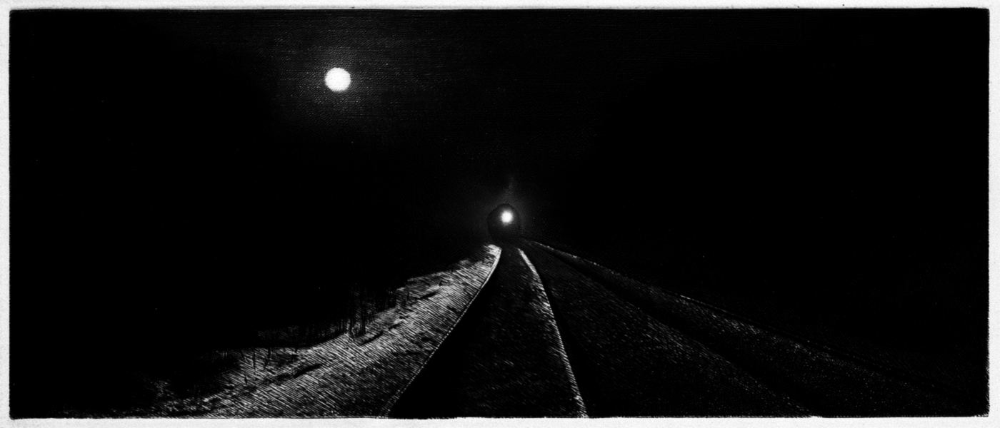
그림 · 재현 · 사람을 그리지 안앗소평원선 철길 우에, 누군가 가로누어 잇섯다.
신문은 그를 「괴시체」라 불넛다.
한 사람의 죽엄이다.
본 야록은 제목 넘어를 지어내지 안는다.
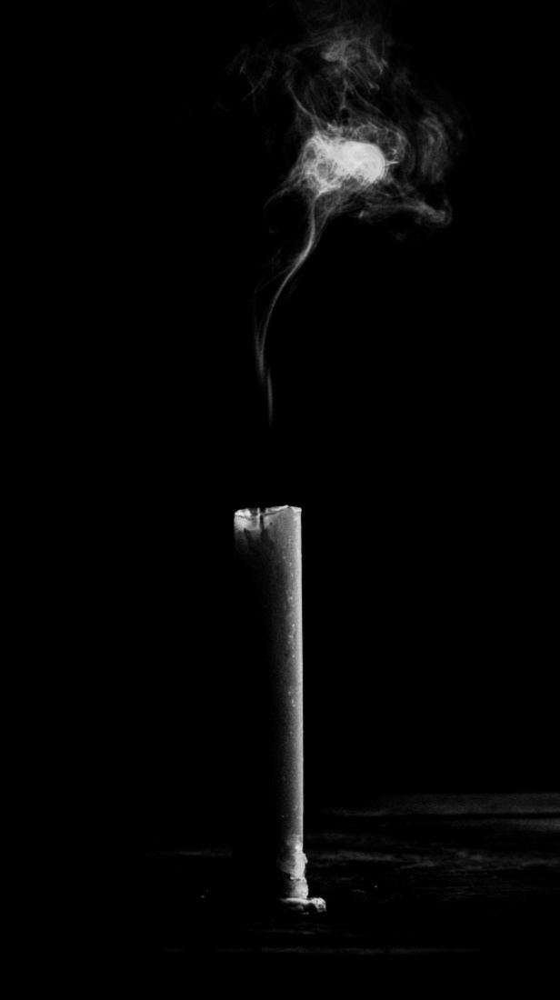
초가 다 꺼젓소.
그런데 — 아모도 켜지 안은 초가 하나 잇소.
제칠화 — 당신의 괴담일천 자 이내
0 / 1000
※ 쓴 글은 이 화면 안에서만 쓰고, 어듸에도 보내지 안소.
※ 이 호외는 편집국이 지어낸 연출이오. 우에 적힌 시각 · 차례는 이 화면 안에서만 쓰고, 어듸에도 보내지 안앗소.